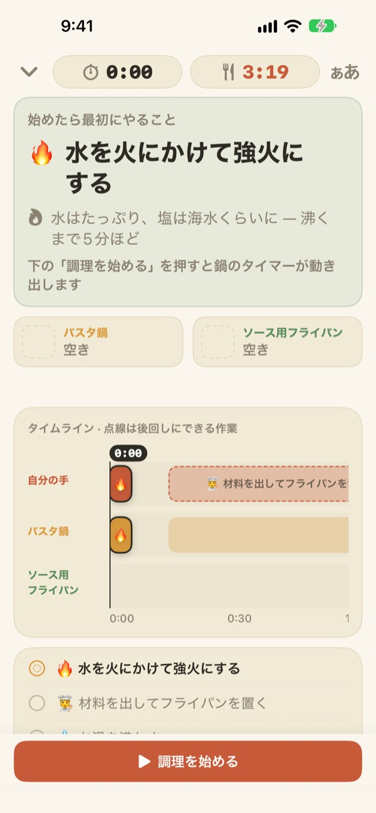
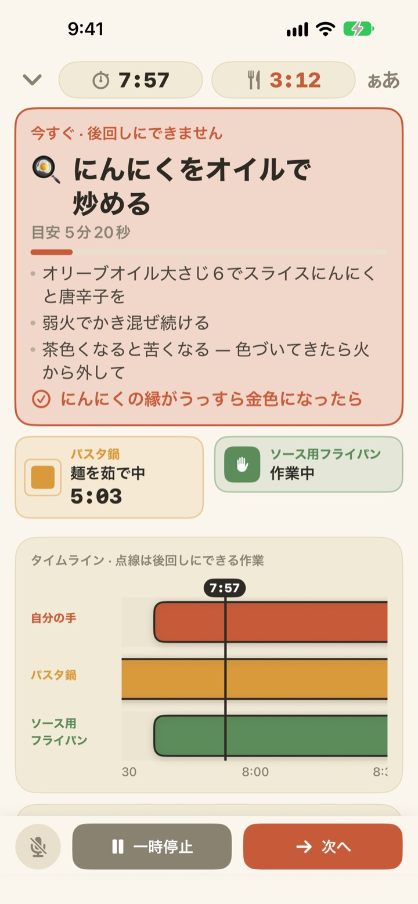
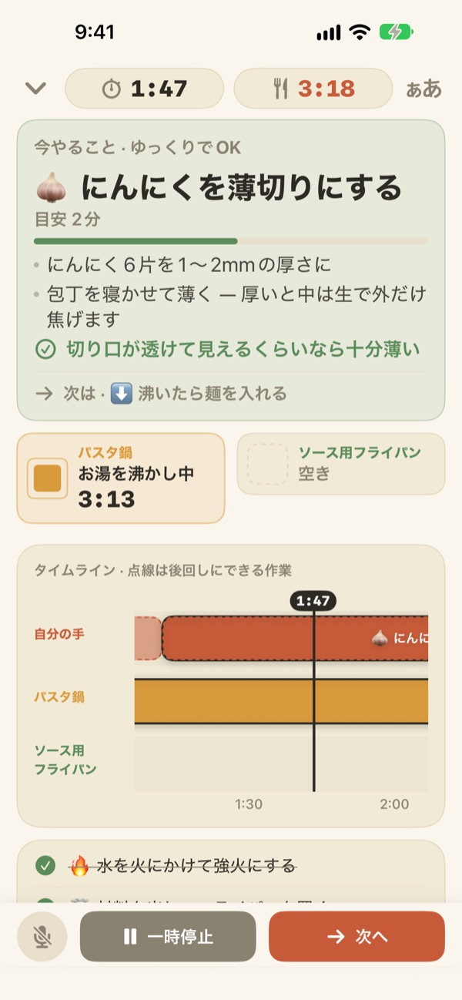
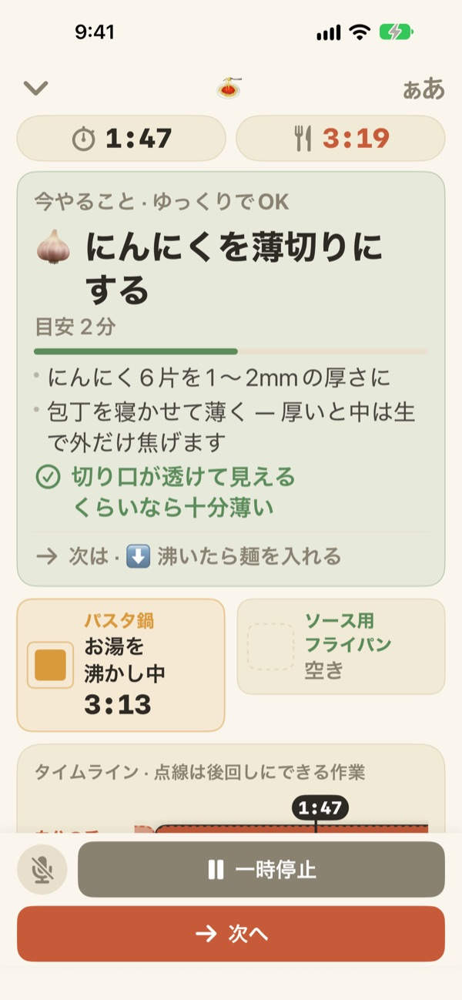

パスタを茹でる間に、
ソースまで
2つの鍋が違うペースで進む料理で、今あなたの手がやるべきことを1つだけ大きく表示します。ソースはパスタが茹で上がる時刻から逆算して始まります。
すべての機能が無料で、アカウントも不要です。

試してみる
アーリオ・オーリオを20倍速で作ってみましょう。「調理を始める」を押し、作業を終えたつもりで「次へ」を押してください。パスタを湯切りするタイミングでカードがどう変わるかも見てみてください。
タイマーを3つかけたのに、パスタがのびたことはありませんか？
パスタのタイマー、ソースのタイマー、にんにくを炒める時間を別々に計っていると、どれが先かわからなくなります。にんにくを切っている間に湯切りのタイミングを逃し、ソースはパスタより遅れて仕上がる。Geusaieはレシピを「これの次にこれ」として理解しているので、今やることを1つだけ教えてくれます。
待てない作業が来ると、カードが赤くなる
パスタの湯切り、焦げる寸前のにんにく。遅れると料理が台なしになる作業が来ると、カードがテラコッタ色に変わり、まな板の作業はいったん止めるよう知らせます。
鍋ができあがると、画面を見ていなくても通知が届き、すぐやるべきことも一緒に教えてくれます。

切る作業は、手が空いたときだけ
にんにくを切る、チーズをおろす、計量する。どれも時間に縛られない作業なので、秒は数えません。手が空いている間だけバーが進み、鍋に呼ばれたら止まり、戻れば続きから再開します。
火をつけるのが3分遅れたら、その後の作業もまとめて3分ずれます。段取りは、実際にやった時刻から毎回計算し直します。

キッチンに立てかけて、声で進める
1〜2歩離れても読めるように文字サイズを4段階で大きくでき、調理中は画面が消えません。
手が濡れていたら次へと言ってください。画面に触れずに次の作業へ進みます。

始めるのは3ステップだけ
- 1
料理を選ぶ
かかる時間の目安と、必要な鍋の数を見て選べます。
- 2
「調理を始める」を押す
最初の作業を先に表示し、押した瞬間から鍋のタイマーが動き出します。
- 3
終わったら「次へ」
ボタンを押すか「次へ」と言えば、次にやることが表示されます。
色が、そのまま急ぎ具合です
- 緑
- 下ごしらえです。ゆっくりで大丈夫。
- マスタード
- 鍋の作業の番です。今やればよく、急ぐほどではありません。
- テラコッタ
- 後回しにするとパスタがのびたり焦げたりします。今すぐ。
- 鍋の枠
- 四角が縮んだ分が残り時間です。鍋の時間は隠しません。
タイムラインで点線のバーは、後回しにしてもいい作業です。
すべての機能が無料です
無料
- 2つのレシピすべて
- 鍋ごとのタイマーと全体のタイムライン
- 鍋ができたときの通知
- 声で「次へ」
- 4段階の文字サイズ
- Siriやショートカットからすぐ開ける
開発者を応援する（任意）
- 役に立ったと思ったら、設定から小さなチップを送れます
- チップで開く機能はありません。送らなくても、すべての機能はそのままです
1回ずつのチップで、サブスクリプションではありません。
アカウントも広告もなく、インターネットがなくても料理できます。
よくある質問
「次へ」と言っても進みません。
左下のマイクボタンが赤なら聞き取り中、グレーならオフです。最初にマイクと音声認識の両方を許可する必要があり、許可しなかった場合は設定アプリ > Geusaieでオンにできます。アプリは「次へ」ボタンに書かれている言葉を聞き取ります。周りがとてもうるさいときは、画面下の「次へ」ボタンを押してください。
鍋ができたのに通知が来ません。
設定アプリ > 通知 > Geusaieで通知がオンになっているか確認してください。集中モードがオンだと音が鳴らないことがあります。通知が届くのは鍋ができあがったときだけです。切る・おろすといった下ごしらえは、急かさないよう通知しません。
始めるのが遅れたら、段取りはどうなりますか？
実際にやった時刻から計算し直します。火をつけるのが3分遅れれば、その後の作業も3分ずれます。ソースはパスタが茹で上がる時刻に合わせて逆算されます。
文字が小さいです。
調理画面の右上にある文字サイズのボタンから、標準・大・さらに大・特大を選べます。選んだサイズは次回もそのままです。
調理中に画面は消えますか？
調理中は画面が消えません。手が濡れていても画面に触れずに済むようにしています。
どんな料理が入っていますか？
アーリオ・オーリオ（約15分・鍋2つ）とトマトクリームパスタ（約20分・鍋2つ）です。Serious Eats、Gimme Some Oven、RecipeTin Eats、The Burnt Butter Tableのレシピを参考にしています。鍋2つを同時に使う料理なら何でも向いているので、入れてほしいレシピがあれば教えてください。
声は保存されますか？
いいえ。「次へ」という言葉だけを聞き取り、音声を録音したり保存したりしません。端末が対応していれば、音声認識も端末内だけで処理します。個人情報は収集しません。
Siriで開けますか？
はい。Siriやショートカットアプリで料理を選ぶと、その料理の調理画面がすぐに開きます。タイマーは、お湯を沸かす準備ができて「調理を始める」を押したときに動き出します。
どの端末で使えますか？
iOS 17以降のiPhoneとiPadで使えます。アカウントは不要で、インターネットがなくても使えます。
不具合の報告やレシピの提案は？
アプリの設定 > フィードバックを送る、または下のメールアドレスからお送りください。端末のモデルとiOSのバージョンを書いていただけると、より早く確認できます。通常は数日以内にお返事します。
困ったこと、気になったこと、入れてほしいレシピはleeo@kakao.comまでお送りください。